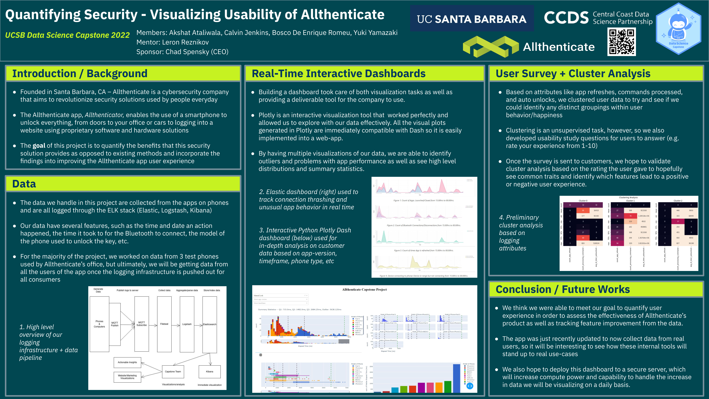
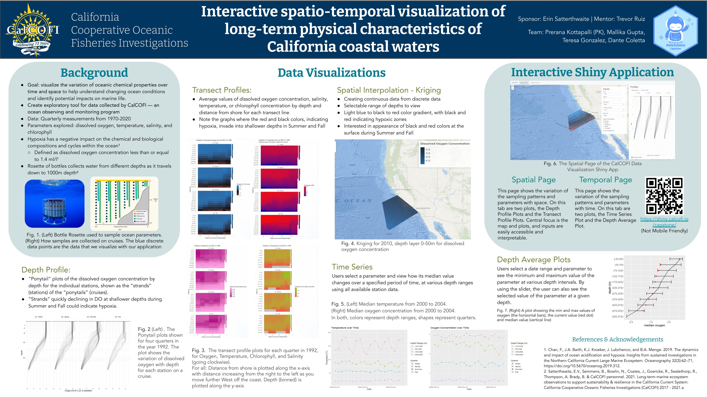
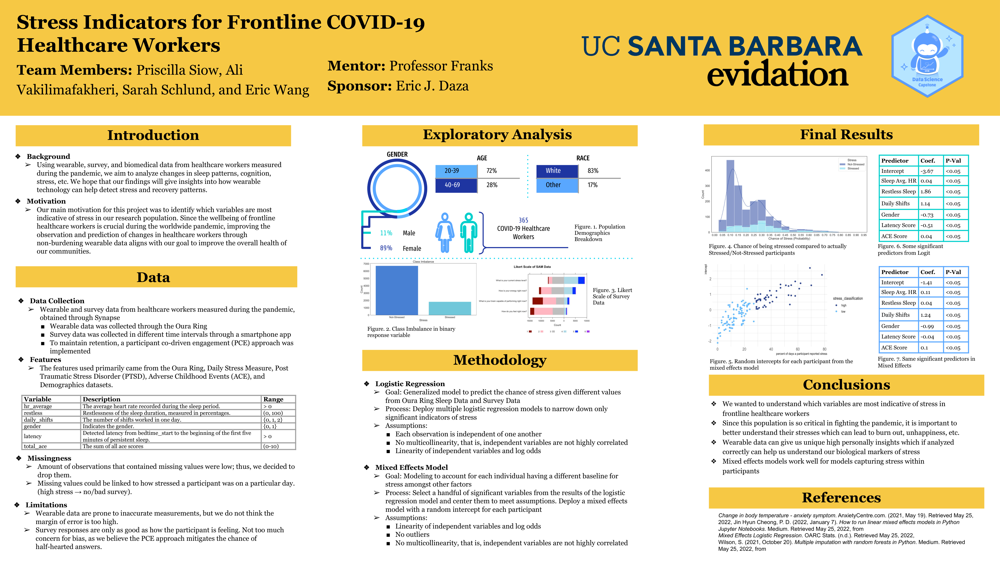
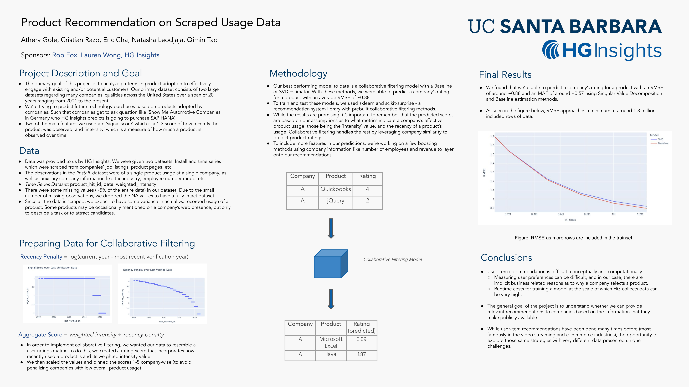
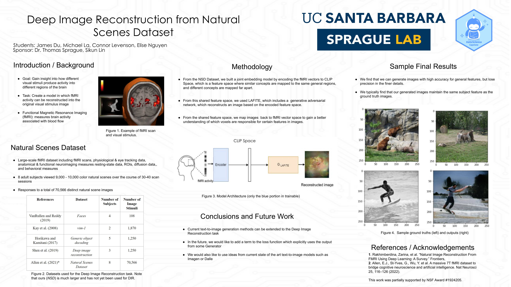

2021-2022 Projects
Listed alphabetically by project sponsor.
Allthenticate
Quantifying Security - Visualizing Usability of Allthenticate
Student team: Akshat Ataliwala, Calvin Jenkins, Bosco De Enrique Romeu, Yuki Yamazaki
Project advisors: Chad Spensky and Leron Reznikov
The primary objectives of this project are being able to quantify the benefits that our security solution provides as well as improving the Allthenticate user experience. To achieve this, we have two main areas of focus.
First, we want to quantify how much of an improvement Allthenticate’s security solution provides over existing solutions. This includes tasks such as measuring time saved by using Allthenticate, tracking changes in Bluetooth connection, and monitoring app status. We will analyze the user data provided by the logs from readers, as well as the phone and computer apps.
Second, we intend to increase how well the product is working. Allthenticate is constantly improving, and with user-happiness being at the core of the company’s values, we want to cater the best experience for the user. An example of this could be predicting a user’s app behaviors to personalize their UI to give them the most seamless experience for their particular needs.
Building a dashboard took care of both visualization tasks as well as providing a deliverable tool for the company to use. Plotly is an interactive visualization tool that worked perfectly and allowed us to explore with our data effectively. All the visual plots generated in Plotly are immediately compatible with Dash and easily implemented into a web-app.
By having multiple visualizations of our data, we are able to identify outliers and problems with app performance as well as see high-level distributions and summary statistics.
Allthenticate’s app was just recently updated to now collect data from real users. It will be interesting to see how these internal tools will stand up to real use-cases.

AppFolio
Deep Learning Recommendation Systems for Property Management Software
Student team: Alyssa Keehan, Jordan Tran, Joshua Harasaki, Philip Carey & Romina Fareghbal
Project advisors: Shyr-Shea Chang, Soeren Thust, Erika McPhillips
We created a recommender system that predicts users interests and recommends properties to users based on previous user interactions and property features. Recommender systems are among the most powerful machine learning systems that are used to help users identify items they may be interested in and also helps companies increase interaction and sales.
Our sponsor is AppFolio, a tech company based in Santa Barbara that provides innovative software, services, and data analytics to the real estate industry.
Building this model will allow AppFolio to analyze the results of our recommender system to assess how interaction data can be used to better their products. We explored multiple models including the Bilateral Variational Autoencoder (BiVae), TriVae, Visual Bayesian Personalized Ranking (VBPR), and Deep Cross Network (DCN) in an effort to achieve the highest prediction accuracy using 16 property features from our given dataset and images. Ultimately, we want to integrate our model into the Santa Barbara property website, which was built by the AppFolio Sponsored CS Capstone team.

California Cooperative Oceanic Fisheries Investigations (CalCOFI)
Interactive Spatio-Temporal Visualization of Long-Term Physical Characteristics of California Coastal Waters
Student team: Prerana Kottapalli (PK), Mallika Gupta, Teresa Gonzalez, Dante Coletta
Project advisors: Erin Satterthwaite and Trevor Ruiz
The goal of this project is to visualize the variation of oceanic chemical properties over time and space to help understand changing ocean conditions and identify potential impacts on marine life.
We will create an exploratory tool — an ocean observing and monitoring program – from the data collected by CalCOFI. Data includes quarterly measurements of oceanic samples, at a depth of up to 1,000m, collected from 1970-2020. Parameters explored are dissolved oxygen, temperature, salinity, and chlorophyll.

Carpe Data
Multi-class Claims Activity Classification Based on HTML data
Student team: Annie Huang, Anum Damani, Rithvik Vobbilisetty, Alex Rudolph, Tyler Chia
Project advisors: Crystal Zhang, Kevin Neal, Joshua Bang
Our project focuses on building machine learning classification models in Python that predict and flag whether or not a web page contains evidence about a fraud claim and provide information about the specific types of activity that is present.
Insurance companies typically receive a significant amount of claims each year. By automatically flagging and classifying web pages that have information potentially relevant to the claims, our project would help to significantly reduce the amount of manual inspection required for potential cases of insurance fraud.
Our dataset provided by the Carpe Data team contained 42,485 observations, representing web pages potentially containing claimant activity information. Ultimately, our best performing model was our SVM classifier with a weighted average precision of 85%.

Cheadle Center for Biodiversity and Ecological Restoration (CCBER)
Big Bee: Hair Recognition and Quantification
Student team: Harper Klauke, Jonathan Wong-Lau, Harleen Kaur, and Nicholas Alexander
Project advisors: Katja Seltmann and Joshua Bang
The Cheadle Center for Biodiversity and Ecological Restoration (CCBER) is working with our capstone team to continue the research and understanding of bee ecology through image and trait digitalization.
Bee species are decreasing in both number and diversity. As important pollinators, bees are responsible for creating and maintaining the ecosystems that many animals and humans rely on. Examining their physical traits and the differences between species will allow us to study the resiliency of different bees using computer vision and machine learning.
We worked with 550 high resolution lateral bee images that were gathered from various institutions for the Bee Library, an online repository of bee image, trait, and specimen data. Contributors included the Museum of Comparative Zoology, Harvard University, University of Kansas Natural History Museum Entomology Division, and the UC Santa Barbara Cheadle Center for Biodiversity and Ecological Restoration.
This research was supported by the National Science Foundation: Extending Anthophila research through image and trait digitization (Big-Bee) project (DBI2102006).

Center for Information Technology and Society (CITS)
Analyzing Changes in Social Media Usage Behavior
Student team: Eoin Hayes, Qiru Hu, Jasmine Kwok, Lucas Nguyen, Xavier Speropoulos
Project advisors: CITS Center, Qing Huang, Erika McPhillips
In 2020, The Social Dilemma became the most popular movie on Netflix. The documentary reveals the downsides of the major social media platforms.
The goal of this project is to analyze the impact of The Social Dilemma on its audience’s attitudes towards social media. Does watching this movie increase/decrease/not change people’s social media usage?
To answer this question, we performed a series of statistical analyses on user-generated posts from Twitter and Reddit. Although our study reveals a difference in the user behavior patterns between the two platforms, the statistical results suggest that, based on the social media data, the movie did not change people’s social media usage.

Energy and Environment Transitions (ENVENT) Lab
Demographic Predictors of Climate Opinion
Student team: Emma Franzblau, Annie Adams, Andrew Bissell, Johnny Yu
Project Advisors: Matto Mildenberger and Adam Waterbury
The aim of our project with the ENVENT Lab was to explore how demographic attributes are differentially predictive of climate opinion in different countries, continents, and time periods.
To pursue this, our project consisted of two parts. In the first we cleaned and organized covariate data from 140+ surveys and merged the demographic information into existing data processing routines. Then we developed preliminary and exploratory predictive models to gain insights into our question of interest.
We were ultimately able to set the foundation for further exploration of the data in the next iteration of the project as a result of completing the necessary proof of concepts; which we did by honing in on the demographic of gender as it relates to various climate opinion metrics through different methods of modeling.

Earth Research Institute (ERI)
Combining Computer Vision and Satellite Imagery to Detect Center Pivot Irrigation
Student team: Ashley Grinstead, Evan Bui, Tiffany Hsu, Tristan Chen
Project advisors: Kelly Caylor, Leron Reznikov, Anna Boser
Irrigated agriculture is expanding rapidly across southern Africa. Because this expansion is occurring without much regulation or monitoring, it’s not exactly clear where and when expansion is happening, or the fate of expanded agriculture. In most expansionary cycles, there is a boom-and-bust dynamic, where many investments fail quickly and only a few persist. The Earth Research Institute (ERI) at UCSB spans areas covering natural hazards, human impacts, earth system science, and earth evolution by collaborating across interdisciplinary departments on campus. Under the guidance of Kelly Caylor (Director of ERI and WAVES lab), we are undertaking a project to explore how center pivot-irrigated agriculture is expanding globally. We’re interested in mapping these dynamics over the recent years and monitoring them going forward.
For the poster, please click the link:
https://drive.google.com/drive/u/1/folders/1iXw7CQ1nq-bBe6MDl6oG6HU8lTl7YaNW
Evidation
Stress Indicators for Frontline COVID-19 Healthcare Workers
Student team: Priscilla Siow, Ali Vakilimafakheri, Sarah Schlund, and Eric Wang
Project advisors: Eric J. Daza and Alex Franks
Using wearable, survey, and biomedical data from healthcare workers measured during the pandemic, we aim to identify variables indicative of stress such as sleep patterns, heart rate, PTSD, etc. We hope that our findings will give insights into how wearable technology can help detect stress in this population.
The features we used primarily came from wearable and survey data such as the Oura Ring, Daily Stress Measure, PTSD, Adverse Childhood Events (ACE), and Demographics datasets that were provided from Synapse database. We built two models: Logistic and Mixed Effects. The mixed effects models work well for models capturing stress within participants and the Logistic Regression was used to narrow down significant indicators of stress.

Wearables Predict Stress in Frontline Healthcare Workers
Student team: Joshua Alvarado, Ian Gascon, Joanne Kim, Mac Kul, Jessica Nguyen
Project advisors: Julio Vega and Alex Franks
Our sponsor, Evidation Health, helps connect individual participants to research studies. They partner with leading healthcare companies to analyze the collected clinical data and publish rigorous studies.
We are using data collected in “The Stress and Recovery in Frontline COVID-19 Health Care Workers Study.” Daily notifications prompted 365 participants to complete tasks through a REDCap study app including a Demographic Survey and a Daily Stress Measure and Work Shift Details survey.
Our project objectives consist of two parts: The first part is to identify the main factors of stress (duration of sleep in different stages, heart rate, respiratory rate, and levels of oxygen saturation); and the second part is to predict whether a participant is stressed given those factors.
For the poster, please click the link:
https://drive.google.com/drive/u/1/folders/1iXw7CQ1nq-bBe6MDl6oG6HU8lTl7YaNW
HG Insights
Product Recommendation on Scraped Usage Data
Student team: Atherv Gole, Cristian Razo, Eric Cha, Natasha Leodjaja, Qimin Tao
Project advisors: HG Insights, Rob Fox, Lauren Wong
The primary goal of this project is to analyze patterns in product adoption to effectively engage with existing and/or potential customers. Our primary dataset consists of two large datasets regarding many companies’ qualities across the United States over a span of 20 years, ranging from 2001 to the present.
The general goal of the project is to understand whether we can provide relevant recommendations to companies based on the information that they make publicly available
Two of the main features we used are ‘signal score,’ which is a 1-3 score of how recently the product was observed, and ‘intensity’ which is a measure of how much a product is observed over time.

Neuroscience Research Institute (NRI)
Modeling Neurodegeneration with Single Cell RNA Sequencing
Student team: Jake Stenger, Nancy Zha, Sara Mandic
Project advisors: Stella Glasauer, Megan Elcheikhali
This project aims to model neurodegeneration in brain organoids by single-cell RNA sequencing.
Through the use of statistical methods we are aiming to compare differences in gene expression between control and mutant brain organoids. In addition we aim to identify cell populations that are more or less abundant in the mutant brain organoids. Thus, we are aiming to gain insight in disease mechanisms that lead to neurodegeneration.

Pricewaterhouse Coopers (PwC)
Compression of NLP-Domain Deep Learning Models
Student team: Yan Lashchev, Jorge Murillo, Nathan Roll, Lawrence Su, and Yangyi Zhang
Project advisors: Robert Bernard and Erika McPhillips
The field of model compression has enjoyed many advancements in recent years, yet few reliable methods have been developed specifically for the natural language processing (NLP) domain.
In this project, we showcase a survey on model compression techniques and implement custom compression methods on an emotion classification task.

Sprague Lab
Deep Image Reconstruction from Natural Scenes Dataset
Student team: James Du, Michael La, Connor Levenson, Elise Nguyen
Project advisors: Thomas Sprague and Sikun Lin
We leverage the recent progress made in text-to-image generation for our task, deep image reconstruction. After building a joint-embedding model which maps the patient’s fMRI to a shared image-text space, we use a pre-trained decoder (LAFITE) which is able to recreate the stimulus image from the encoded vector.
